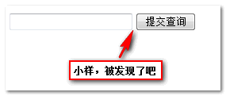
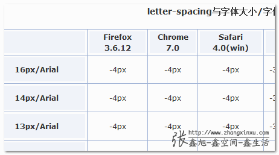

【CSS-task7】
小课堂【郑州第1期】
如何消除inline-block元素之间的间距
分享人：王义山
目录
1.背景介绍
2.知识剖析
3.常见问题
4.解决方案
5.编码实战
6.扩展思考
7.参考文献
8.更多讨论
一.背景介绍
1.提到去除inline-block元素间空白间距，我们不得不先从inline-block元素的背景说起，inline-block水平元素，相信大家都不陌生，因为这是我们写网页时，必须考虑的因素。
2.我们知道，元素有inline，block元素，当然还有我们的inline-block元素，inline-block水平的元素，他比较牛逼，既可以像inline元素一样显示，也可以像block元素一样设置宽高。那么问题来了？，常见的带有inline-block元素性质的元素有哪些呢？ en,,,,,,,比如：img,input,button,,,,还有啥，，，（自己查查啊）
上面不是重点，重点是我们可以通过display属性自定义元素为inline-block水平，这也是利用inline-block元素进行布局的可能条件。但是，世界上没有十全十美的事儿，inline-block在牛逼，也有不足的时候，，，，好,,,,,,we are go on，，，，
二.知识刨析/常见问题/编码实战
dang dang dang ,,yi
,真正意义上inline-block水平元素产生空白间距，是多个inline-block元素水平方向，有空格时，或换行显示时，有空白间距
我们使用CSS更改非inline-block水平元素为inline-block水平，也会有该问题：比如
.space a {
display: inline-block;
padding: .5em 1em;
background-color: #cad5eb;
}

这种表现是符合规范的应该有的表现（不是bug,不是bug，不是bug!）。不过，这类间距有时会对我们布局，或是兼容性处理 产生影响，需要去掉它，该怎么办呢？以下展示ji种方法（欢迎补充）！
四.解决方案
方法一：消除元素之间的空格
元素间留白间距出现的原因就是标签段之间的空格，因此，去掉HTML中的空格，自然间距就木有了。考虑到代码可读性，显然连成一行的写法是不可取的，我们可以,,,
或者
解决方法二：在前一个的结尾标签和下一个的开始标签之前添加注释
方法三：使用margin负值,具体数值需要根据上下文文字大小、文字属性、使用什么浏览器来确定.
方法四：直接让标签不闭合
好吧，虽然感觉上有点怪怪的，但是，这是OK的，使用这种方法需注意最后一个标签必须闭合，不然后面元素显示会有问题
方法五：为父元素设置font-size：0
特别注意设置了父元素之后，子元素也必须设置font-size，不然子元素继承父元素font-size之后，就啥都没了
方法六：为父元素设定letter-spacing（字符间距） -8px，为子元素设定letter-spacing 0,类似于上面添加margin负值
这个letter-spacing的值与字符大小、浏览器的种类都有关系！
方法七：使用word-spacing 单词间距
此方法跟上面方法完全类似，但是要注意，这个元素不能单独用于中文
六.扩展思考
以上去除空格的方法，其实现的原理是什么呢？为甚么这样可以实现呢？下去可以好好思考一下，我们下次讨论，，
七.参考文献
参考一：Baidu
参考二：张大神博客
8.更多讨论
讨论点一：除了inline-block水平元素，会有空白间距，别的元素有吗？比如：block元素，，，大家可以深思考虑下，，，
鸣谢
感谢大家观看
BY : 沁修 | somebody
by 郑明月|王义山